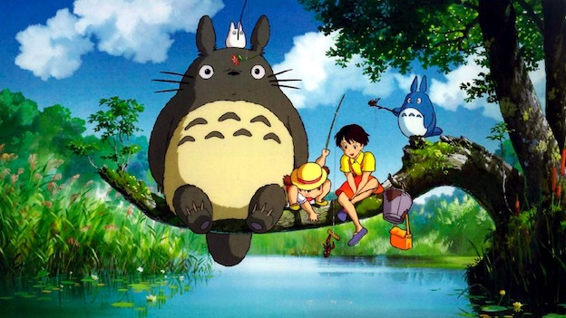
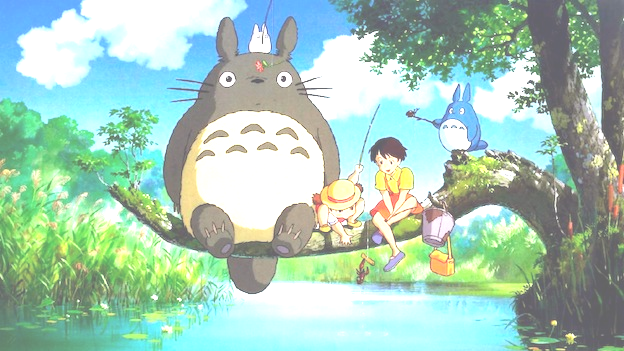
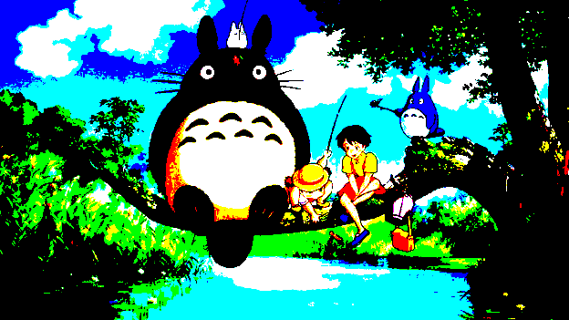
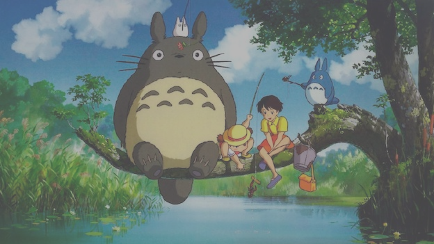
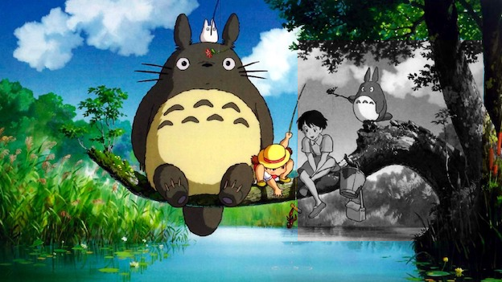
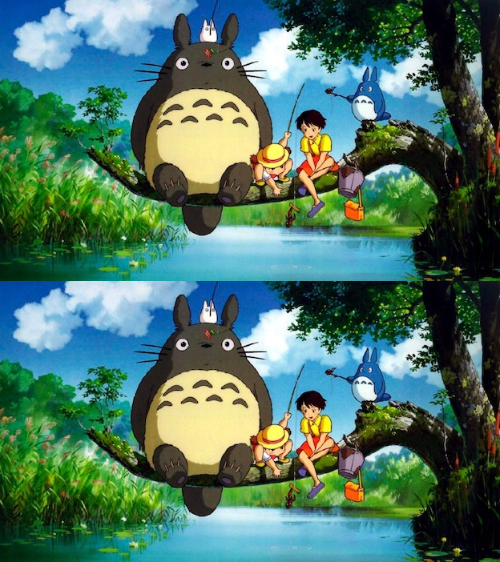
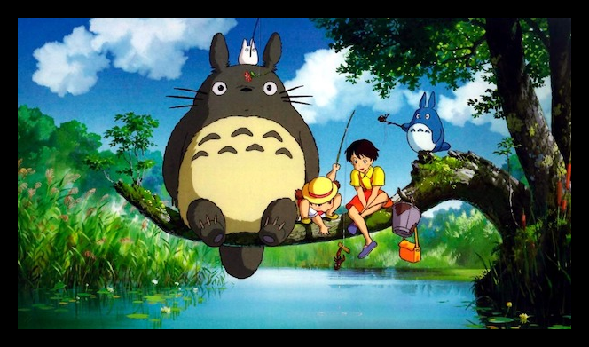

This lab is partially adapted from an activity created by Evan Peck (Bucknell University).
Reminder: you and your partner are a team! You should not move forward to one activity until you are both comfortable with the previous activity.
In this lab, we’ll practice working with images using loops and the RGB color model. Throughout, we’ll be using the middimage module for manipulating image. To use middimage, you should install numpy and pillow through the package manager in Thonny.
Introduction
A Totoro is a friendly forest spirit native to charming rural villages in southern Japan. Our image for today depicts several Totoros.

Figure 1: Three Totoros in their natural habitat, accompanied by two young girls.
To begin the lab:
Download the .zip file provided on Canvas, and open it.
Open lab.py in Thonny.
Run the file in Thonny and check that the image is displayed. If the image is displayed, you are ready to go! Otherwise, you may need to ask the instructor for help or modify the privacy settings on your laptop.
What We’re Doing
Today’s lab is a series of exercises in which we’ll modify this image by writing Python functions that:
Make a copy of the image.
Modify the pixels of the copy, usually in a for-loop.
Return the copy.
Here’s an example. The boost_red() will return a copy of this picture that is…more red.
Figure 2: The result of calling boost_red(im, 100).
def boost_red(im, level):# make a copy of the image, so that we can still use the original one im2 = im.copy()# loop through all the pixelsfor row inrange(im2.height): # im2.height is the number of rowsfor col inrange(im2.width): # im2.width is the number of columns# retrieve the current red level# RGB means that red is index 0 of the pixel red_level = im2[row, col, 0]# add level to the current red level, resulting in a new value new_red_level = red_level + level# ensures that the red level is never larger than 255if new_red_level >255: new_red_level =255# replace the old red level with the new level im2[row, col, 0] = new_red_level# return the modified imagereturn im2
Activity 1
Take some time to ensure that you understand how this function works. Then, check that you are able to call boost_red(im, 100) and achieve the result shown in the margin.
How would you modify this function so that the user could also subtract red by entering a negative integer for level? Please consider what would happen if the new_red_level was less than 0, and how you would address this case. State in a sentence or two what your modification would be. You are not required to implement a function with your modification.
How would you modify this function to create a function boost_blue()? In the Activity 1 area, state in a sentence or two what change would be needed. You don’t have to implement the function.
Pixel-Wise Transformations
In this part of the lab, almost all of your functions are going to have a structure that is very similar to boost_red(). In each of the functions you’ll write here, your code should look something like this:
def my_function(im, level): im2 = im.copy()for row inrange(im2.height): for col inrange(im2.width): # do something to the pixel at im[row, col]return im2
Activity 2
Write a function called brighten() that accepts two arguments: im, the image to be brightened, and level, the level of brightening to apply. You should implement your function in the ACTIVITY 2 area of the lab file. The function should increase all THREE color values of the pixel by the specified level, while ensuring that the resulting color values are never larger than 255. The net result should be that the image becomes brighter.
For full credit, use an additional for-loop to loop through the three color channels. The ideal solution likely involves for color in range(3): or something very similar…
Once you’ve written your function, you can test it like this:
brightened = brighten(im, 100)brightened.show()
Once you are satisfied with the result, please save your image. To do so, run
brightened.save("brightened.png")

Figure 3: The result of calling brighten(im, 100).
Activity 3
Write a function called invert() that accepts a single argument: im, the image to be inverted. You should implement your function in the ACTIVITY 3 area of the lab file. The function should invert all three color values of every pixel. Inverting a color value means subtracting it from 255. For example, if a pixel has a red value equal to 180, then the inverted pixel should have a red value equal to 255 - 180 = 75.
For full credit, use an additional for-loop to loop through the three color channels. The ideal solution likely involves for color in range(3): or something very similar…
Once you’ve written your function, you can test it like this:
inverted = invert(im)inverted.show()
Once you are satisfied with the result, please save your image. To do so, run
inverted.save("inverted.png")
Note: These functions can take some time to run. You might find it useful to comment out your solution to to the previous activity while working on each part.
Figure 4: The result of calling invert(im).
Activity 4
Write a function called greyscale() that accepts a single argument: im, the image to be converted to greyscale. You should implement your function in the ACTIVITY 4 area of the lab file. The function should convert the image to greyscale. To convert a single pixel to greyscale:
Calculate the mean value of each of the red, blue, and green color values. Call this value m.
Set all three color values of the pixel equal to m.
Once you’ve written your function, you can test it like this:
grey = greyscale(im)grey.show()
Once you are satisfied with the result, please save your image. To do so, run
grey.save("greyscale.png")
Figure 5: The result of calling greyscale(im).
Activity 5
Write a function called grainy() that accepts a single argument: im, an image to be made grainy. You should implement your function in the ACTIVITY 5 area of the lab file. The function should make the image grainy by adding some random numbers to the pixel color values.
Start by importing the random module:
import random
Then, you can create a random integer between 0 and 200 (non-inclusive) by calling random.randint(0, 200). You can then add this integer to one of the pixel color channels, and repeat this for each color and each pixel. Your solution here should actually look very similar to your solution for the brighten() function from Activity 2.
Once you’ve written your function, you can test it like this:
grainyd = grainy(im)grainyd.show()
Once you are satisfied with the result, please save your image. To do so, run
grainyd.save("grainy.png")
Figure 6: The result of calling grainy(im).
Activity 6
Write a function called contrast() that accepts two arguments argument: im, an image to be modified, and C, a contrast level. You should implement your function in the ACTIVITY 6 area of the lab file. The function should set the contrast level of the image. Here’s how this works mathematically.
First, compute the contrast factor\(F\), using the following formula:
\[F = \frac{259(C + 255)}{255(259-C)}.\]
Then, compute the new red value \(R'\) in terms of the old value \(R\) using the formula:
\[R' = F(R-128) + 128.\]
Repeat for green and blue, and update the pixel with the new values.
Once you’ve written your function, you can test it like this:
contrasted = contrast(im, 255)contrasted.show()
Please save two different images this time, with two interestingly different contrast levels.
Once you are satisfied with the result, please save your image. To do so, run
contrasted.save("contrast.png")

Figure 7: The result of calling contrast(im, 255).

Figure 8: The result of calling contrast(im, -100).
Selective Transformations
So far, we’ve written several functions to manipulate an entire image. Suppose we instead want to modify only part of an image.
Activity 7
Pick one of the the functions from Activities 2-6 and make a selective version. This version will apply the specified transformation, but only to a chosen rectangular region of the image. This function should have all the same arguments as the old function, plus four new arguments:
row1, the top row of the selected region.
col1, leftmost column of the selected region.
row2, the bottom row of the selected region.
col2, the rightmost column of the selected region.
Your function should apply your chosen transformation only within that region.
Please write your function definition in the ACTIVITY 7 area of the lab file. Please also save a copy of your image.

Figure 9: An example of using a selective version of the greyscale function from Activity 4.
Tiling, Mirroring, and Framing
You can create a new, blank MiddImage like this:
blank = mi.new(width=100, height=200)
A common usage for creating blank images is so that we can “transplant” pixels from another image into them. For example, here’s a function that uses this approach to place only part of an image inside a large black space.
Write a function called vertical_tile that creates a new image in which the old image is repeated twice, one under the other. To do this, create a blank MiddImage that is the same width as the original image and twice the height. Then, use for-loops to modify the pixels.
Please write your function definition in the ACTIVITY 8 area of the lab file.
Once you’ve written your function, you can test it like this:
tiled = vertical_tile(im, 255)tiled.show()
Please also save a copy of your image:
tiled.save("tiled.png")

Figure 11: The output of vertical_tile(im).
Activity 9
Write a function called vertical_mirror that creates a new image in which the old image is repeated twice, one under the other, with the bottom one turned upside down. To do this, create a blank MiddImage that is the same width as the original image and twice the height. Then, use for-loops to modify the pixels.
Please write your function definition in the ACTIVITY 9 area of the lab file.
Once you’ve written your function, you can test it like this:
Write a function called frame that creates a new image in which the old image is surrounded by a black frame. Use a second argument called thickness to allow the user to specify the thickness of the frame. To do this, create a blank MiddImage that is larger than the original image (how much larger?) Then, use for-loops to transplant the pixels.
Please write your function definition in the ACTIVITY 10 area of the lab file.
framed = frame(im, 255)framed.show()
Please also save a copy of your image:
framed.save("framed.png")

Figure 13: The output of frame(im, 20).
Do Something Creative!
Activity 11
For this activity, it’s fine if you’d like to use a different image than the one I supplied.
Working with your partner, develop an idea for a creative function that combines some of the ideas from the previous parts, adding any new components that you’d like to incorporate.
Please write your function definition in the ACTIVITY 11 area of the lab file.
Figure 14: One example of a creative output, combining the inversion, framing, and mirroring functions that we developed in previous activities.
Submit Your Work
On Gradescope, please upload both your lab.py file and all of the images that you generated while completing the lab. Only one lab partner needs to make a submission. Make sure to add the other partner’s name!!